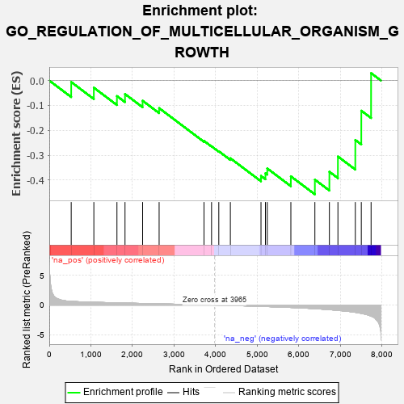
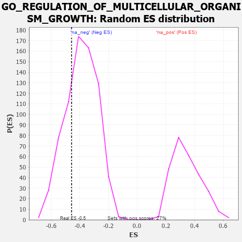

| | | Dataset | 7d |
| Phenotype | NoPhenotypeAvailable |
| Upregulated in class | na_neg |
| GeneSet | GO_REGULATION_OF_MULTICELLULAR_ORGANISM_GROWTH |
| Enrichment Score (ES) | -0.45729467 |
| Normalized Enrichment Score (NES) | -1.1687845 |
| Nominal p-value | 0.2739726 |
| FDR q-value | 0.66796434 |
| FWER p-Value | 1.0 |
Table: GSEA Results Summary

Fig 1: Enrichment plot: GO_REGULATION_OF_MULTICELLULAR_ORGANISM_GROWTH
Profile of the Running ES Score & Positions of GeneSet Members on the Rank Ordered List
| PROBE | GENE SYMBOL | GENE_TITLE | RANK IN GENE LIST | RANK METRIC SCORE | RUNNING ES | CORE ENRICHMENT | | 1 | HTRA2 | | | 527 | 0.621 | -0.0059 | No |
| 2 | RAI1 | | | 1071 | 0.469 | -0.0287 | No |
| 3 | CDK4 | | | 1626 | 0.370 | -0.0624 | No |
| 4 | SGPL1 | | | 1820 | 0.334 | -0.0542 | No |
| 5 | CREB1 | | | 2243 | 0.269 | -0.0811 | No |
| 6 | ATRN | | | 2640 | 0.207 | -0.1108 | No |
| 7 | HSF1 | | | 3718 | 0.039 | -0.2425 | No |
| 8 | NIPBL | | | 3900 | 0.010 | -0.2643 | No |
| 9 | CSF1 | | | 4074 | -0.019 | -0.2842 | No |
| 10 | ADRB2 | | | 4352 | -0.068 | -0.3124 | No |
| 11 | DRD2 | | | 5088 | -0.221 | -0.3833 | No |
| 12 | SMO | | | 5195 | -0.247 | -0.3726 | No |
| 13 | TNKS2 | | | 5239 | -0.254 | -0.3533 | No |
| 14 | BBS4 | | | 5806 | -0.407 | -0.3849 | No |
| 15 | BBS2 | | | 6383 | -0.608 | -0.3982 | Yes |
| 16 | NPY1R | | | 6732 | -0.776 | -0.3666 | Yes |
| 17 | GHSR | | | 6937 | -0.894 | -0.3053 | Yes |
| 18 | PLAC8 | | | 7355 | -1.223 | -0.2388 | Yes |
| 19 | PPIB | | | 7499 | -1.396 | -0.1211 | Yes |
| 20 | PLS1 | | | 7734 | -1.855 | 0.0298 | Yes |
Table: GSEA details [plain text format]

Fig 2: GO_REGULATION_OF_MULTICELLULAR_ORGANISM_GROWTH: Random ES distribution
Gene set null distribution of ES for GO_REGULATION_OF_MULTICELLULAR_ORGANISM_GROWTH